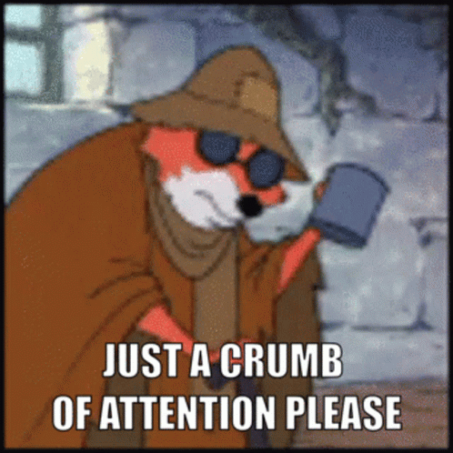

the Graph Attention Network (GAT) is a Graph Neural Network (GNN) using attention to represent relative importance of neighbooring nodes in a graph. GNNs are a special kind of neural network operating on graphs. At first glance, they seem to be not very suitable for image analysis, but after an in-depth analysis of the Graph Attention Network, we will see an example of application of such model in superpixel image classification.
